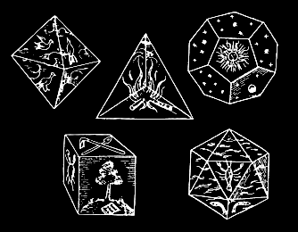

柏拉圖正多面體是指以正三角、正方形或正五面體做面的3D物件，其中任意兩面不穿過彼此，並且不論任何頂點，都是相同數量與形狀的面的交會點。歐基里德在2000年即證明，擁有此些性質的多面體總共只有五種。
你可以在右邊的程式是中觀察此些多面體，並將其折起成多面體或拆開成展開圖。
更深入探索: iPhone and iPad 上的 iOrnament 程式提供了關於對稱、花紋與柏拉圖多面體的互動講解。
Link: www.science-to-touch.com/iOrnament
|
 |
古文物中，五種柏拉圖正多面體跟五元素
(水、火、風、地、宇宙)有緊密關係。